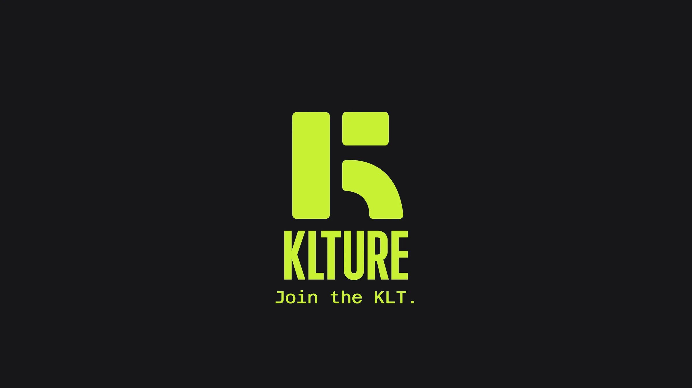
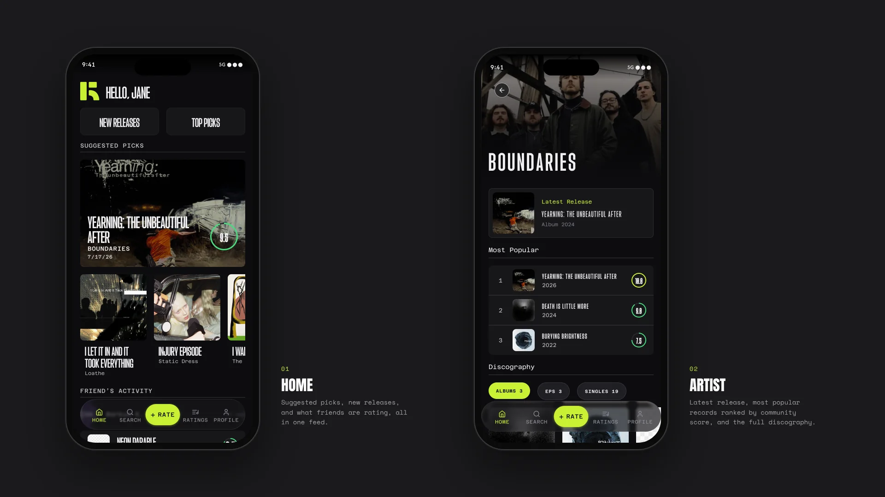
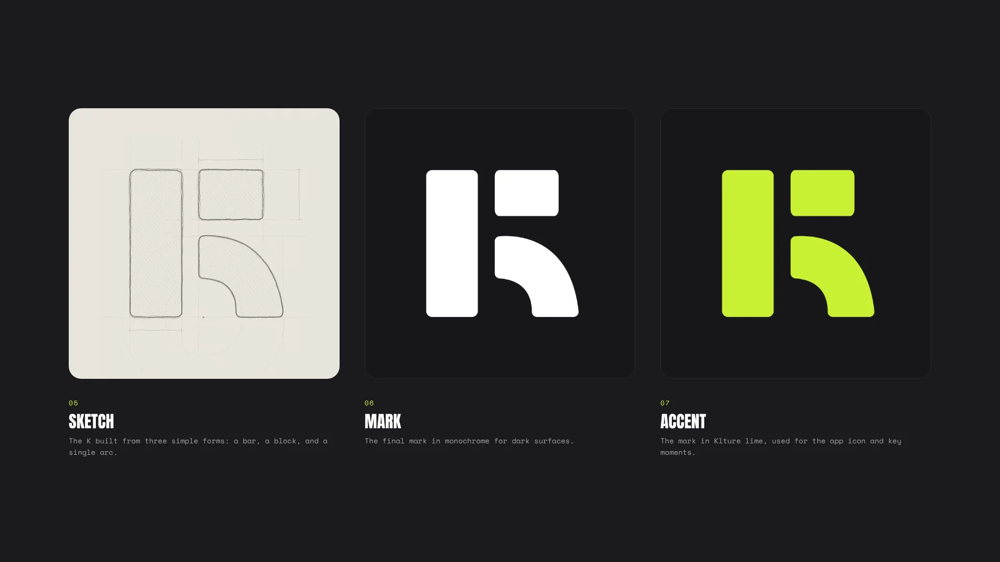
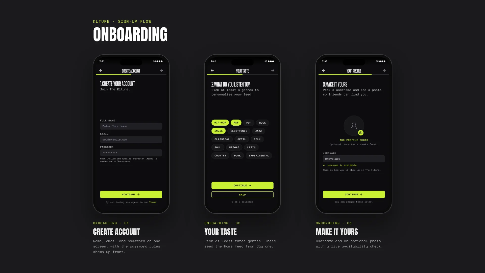
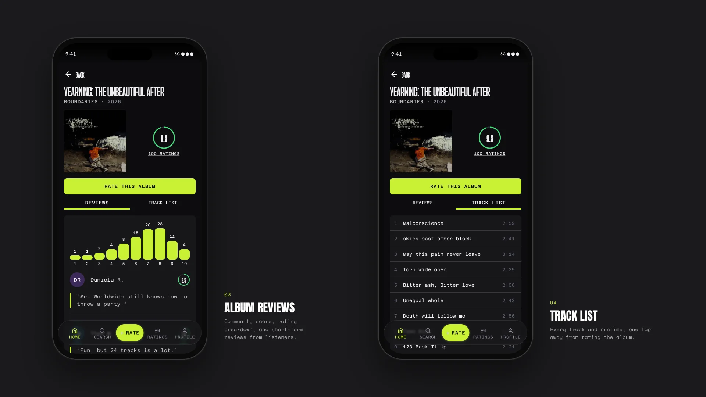

Independent — iOS app · In progress
Klture
A social album-rating app for iPhone that I designed in Figma and am building end to end, from design tokens to database.

01 — Overview
Klture is a native iOS app for rating albums, keeping album lists, and seeing what friends are listening to. I designed it in Figma, then built every layer myself: a SwiftUI client and a Supabase backend running on open music data.
Music is a major passion of mine. I love so many parts of it, from live shows to new releases to the fashion around it, and it helps define who I am. When I went looking for a way to express that on my phone, I found few options that felt made for mobile. The one app that felt substantial, Musicboard, had a mostly Spanish-speaking community, so I couldn’t really join the conversation, and the social side that drew me in left me on the outside. Klture is my answer: one place to rate albums, keep lists and see what my friends are listening to.
I started on 25 September 2026. Six weeks in, it’s 60 commits and 10 test builds deep, and still in active development.

02 — The challenge
The hard part wasn’t the screens. It was making them feel trustworthy on top of free, open data with strict rules.
Messy data. Live albums, missing covers and typo-filled searches all had to be handled before they reached the UI.
Licences. Every music API has terms about what you can show and how. Faster options weren’t always allowed.
App Review. A social app needs sign-in, account deletion, moderation and privacy disclosures before Apple will accept it.
03 — Brand and design system
The mark is a K built from three simple forms: a bar, a block and a single arc. It works in white for dark surfaces and in Klture lime for the app icon and key moments.
I treated the design system as the contract between design and code. Figma colours, spacing and type became design tokens, and those tokens map one-to-one to SwiftUI theme files. From there I built 37 shared components behind 30+ screens: a custom floating tab bar with a central “Rate” pill, score badges, buttons, empty states and initials avatars. Every layout is checked at 390pt, the smallest width I support (iPhone 13).
In week three I reworked the type. Agharti carries the editorial layer: hero names, headings and score numerals. Azeret Mono carries everything functional. One .textStyle(_:) call sets font, case, tracking and line spacing together, so a style can’t drift between screens.

04 — Onboarding
The prototype ran three steps: create an account, pick your genres, then choose a username and photo. The genre picks matter most, because they seed the Home feed from day one.
In the build, I cut account creation down to Sign in with Apple. Every extra field was friction before the user had rated anything, so the name, email and password step became a single tap. Genre picks and the username check, with its live availability message, stayed.

05 — Rating and discovery
Rating is the core action, so it sits in the middle of the tab bar and gets the most care. A custom slider drives a score ring with haptics, and a written review is optional. After rating, you can drop the album straight into a list.
Ratings save instantly. If the save fails, the score rolls back and an error toast explains why, so the UI never shows something the database doesn’t have.
Album pages show the tracklist with featured artists, the community average, a score distribution chart and reviews. Artist pages use a blurred hero built from the latest cover and lead with studio albums. Live albums are filtered out at ingest so they don’t clutter discographies.
Home suggests albums from the genres picked during onboarding. Each day it alternates new releases with well-known records, shows one album per artist, and skips anything already rated.

06 — Search that feels instant
Search had to feel instant on a source that allows one request per second. I solved it in three layers, each one a design decision as much as a technical one.
A local catalogue. Albums and artists from MusicBrainz are cached in Postgres, so repeat searches never touch the slow API.
Two-stage results. The app asks for a quick result and the full result at the same time. The quick one never waits on MusicBrainz and returns in a few hundred milliseconds. Full results then slot in below without moving the rows already on screen.
Overnight warming. A nightly job loads discographies for the top 500 artists and the top 50 per onboarding genre, so the most likely searches are already cached.
Search also forgives typos. Short names allow one mistake and longer names two, so “kendirck” still finds Kendrick Lamar. Exact matches always rank first, so “blur” stays Blur instead of becoming Blue.
07 — Choosing the right data
Working code isn’t finished if the terms don’t allow it.
I built a switch to the Apple Music API for faster search, then reverted it the same day. Apple’s developer agreement only allows that API for giving users access to their own Apple Music subscription, and artwork can’t be shown apart from playback.
I also ruled out Spotify, whose extended access needs an organisation and about 250k monthly users, and whose policy bars combining its content with other services. Later I dropped Deezer and iTunes cover fallbacks after checking their terms.
Klture stays on MusicBrainz (CC0), Cover Art Archive, Last.fm and Wikidata. Albums without official art get a designed placeholder instead of a borrowed image.
08 — Designing for App Review
Before building the social layer, I wrote a launch checklist against Apple’s App Review Guidelines, then designed and built everything on it.
Friends. Requests become mutual friendships once accepted. Blocking hides both people from each other, and report and block sit on every profile and review.
Notifications. Push for friend requests, accepted requests and friends’ new ratings, each with its own toggle in Settings.
Account deletion. Deleting your account also revokes your Sign in with Apple token and removes your profile, ratings, lists and friendships.
Privacy and legal. A privacy manifest, plus Privacy Policy, Terms and Acknowledgements rendered natively in the app.
Clear errors. Sign-in failures from Apple, the network or validation each get their own plain-language message.
09 — Where it stands
Klture is a work in progress. Six weeks in, the core product is designed and built, and I test each build through TestFlight.
- 6 weeksFrom Figma prototype to testing on TestFlight
- 10Test builds, each followed by a written QA pass
- 37Shared components behind 30+ screens
- 390ptSmallest width every screen is tested at
There are no user numbers yet. Next up: a “Listen on…” button that links out to streaming services, and a self-hosted MusicBrainz mirror to remove the rate limit.
10 — What I learned
Perceived speed is a design problem. Two-stage search didn’t make MusicBrainz faster. It changed what the user sees first, and that’s what makes it feel instant.
What I’d do differently: find an API that fits from the start. MusicBrainz allows one request per second, and much of the build (the cache, two-stage search, overnight warming) exists to work around that. Next time I’d settle on a data source that handles what the app needs before designing around it.